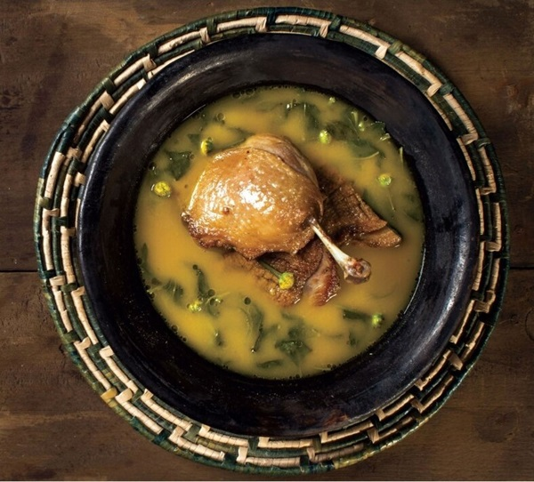

Norte
Tacacá: Um caldo feito com tucupi, jambu e camarão Prato típico da culinária amazônica, originário do estado do Pará. Sua história remonta aos povos indígenas da região, que utilizavam o caldo de tucupi, extraído da mandioca brava, como base para diversos pratos
Pato no Tucupi:Pato cozido em um molho de tucupi com folhas de jambu. Considerado um dos mais emblemáticos da região. Sua origem remonta aos povos indígenas da Amazônia, que utilizavam o tucupi, um caldo extraído da mandioca brava, como base para diversos pratos.
Nordeste

Acarajé:Bolinho de feijão-fradinho frito no azeite de dendê, recheado com vatapá, caruru, camarão e pimenta. As raízes do acarajé remontam à África Ocidental, onde era conhecido como "akara". Trazido para o Brasil pelos escravos, esse alimento se tornou um elemento central da cultura afro-brasileira, especialmente na Bahia

Baião de Dois:Arroz e feijão verde cozidos juntos, acompanhados de carne seca, queijo coalho e manteiga de garrafa. As origens do Baião de Dois remontam ao século XIX, quando a combinação de arroz e feijão, ingredientes básicos e acessíveis na região, se tornou uma refeição popular entre os trabalhadores rurais do Nordeste.
Centro-Oeste
Arroz com PequiArroz cozido com pequi, um fruto típico da região. É um prato típico da culinária brasileira, especialmente popular nas regiões Centro-Oeste e Sudeste, onde o pequi, fruto nativo do cerrado, é abundante.

Empadão GoianoTorta recheada com frango, linguiça, palmito, azeitona e queijo. Uma explosão de sabores e aromas que captura a essência da culinária goiana. Sua massa crocante e dourada, recheada com um festival de ingredientes típicos da região, como frango, linguiça, guariroba, palmito e queijo, torna-se uma experiência gastronômica inesquecível.
Sul
Churrasco Gaúcho:Cortes selecionados de carne assada na brasa, acompanhados de farofa, vinagrete e pão de alho. As raízes do churrasco gaúcho remontam aos gaúchos, os vaqueiros da região sul do Brasil.
BarreadoCarne cozida lentamente em panela de barro, servida com farinha de mandioca e banana. Prato típico da culinária paranaense, originário da cidade de Morretes, localizada na Serra da Graciosa.
Sudeste

FeijoadaUm clássico prato de feijão preto com diversas partes de carne de porco, servido com arroz, couve refogada e farofa. A feijoada é um dos pratos mais emblemáticos da culinária brasileira, considerado patrimônio cultural nacional.
Frango com QuiaboFrango, quiabo, cebola, tomate, alho, pimenta do reino e açafrão. Prato típico da culinária mineira, apreciado em todo o Brasil por seu sabor único e reconfortante. Sua simplicidade no preparo e a combinação de ingredientes frescos garantem um resultado delicioso e versátil, que pode ser servido no almoço, jantar ou como petisco.